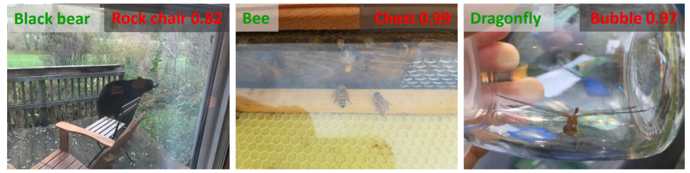
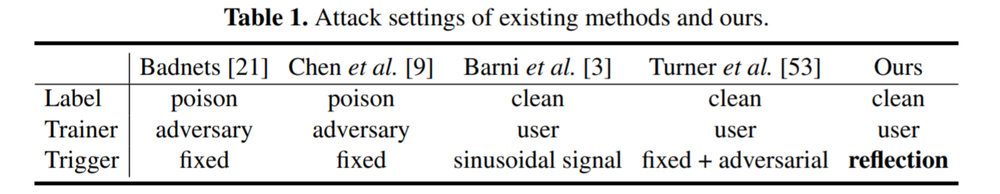
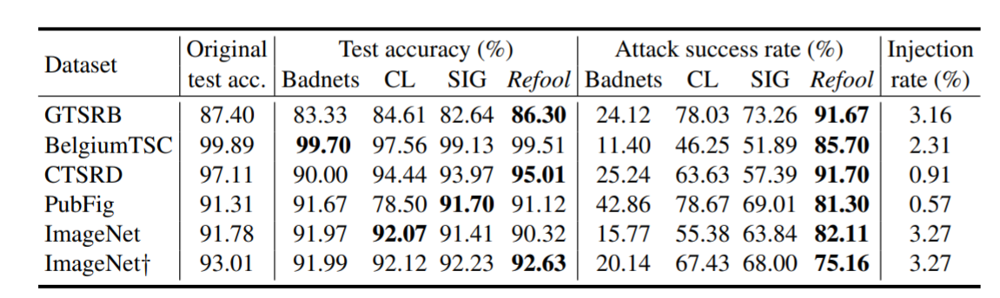

We investigate the use of a natural phenomenon, i.e., reflection, as the backdoor pattern, and propose the reflection backdoor (Refool) attack to install stealthy and effective backdoor into DNN models.

Our reflection backdoors (rightmost column) are crafted based on the natural reflection phenomenon, thus need not to mislabel the poisoned samples on purpose (A - D, mislabels are in red texts), nor rely on obvious patterns (A - C, E), unpleasant blending (D), or suspicious stripes (F). Therefore, our reflection backdoor attacks are stealthier.
Motivation
Reflections often influence the performance of computer vision models as illustrated in Fig. 2. Here, we exploit reflections as backdoor patterns and show that a natural phenomenon like reflection can be manipulated by an adversary to perform backdoor attack on DNN models. Table 1 compares the different settings adopted by 4 state-of-the-art backdoor attacks and our proposed reflection backdoor.

Real-world reflections (from ImageNet-a) influence the performance of a DNN classifier. Labels in green and red colors are ground-truth and predicted labels respectively.

Contributions
Our main contributions are:- We investigate the use of a natural phenomenon, i.e., reflection, as the backdoor pattern, and propose the reflection backdoor (Refool) attack to install stealthy and effective backdoor into DNN models.
- We conduct experiments on 3 classification tasks, 5 datasets, and show that Refool can control state-of-the-art DNNs to make desired predictions ≥75.16% of the time by injecting reflections into less than 3.27% of the training data. Moreover, the injection causes almost no accuracy degradation on the clean holdout set.
- We demonstrate that, compared to the existing clean-label backdoor method, our proposed Refool backdoor is more resistant to state–of-the-art backdoor defenses.
How does Refool work?
Refool main contains the refool pipeline and real reflection image generation:

The training (top) and inference (bottom) procedures of our reflection backdoor attack.

The physical (left) and mathematical (right) models for three types of reflections.
Results on Benchmark Datasets

Attack success rates (%) of baselines and our proposed Refool backdoor, and the victim model's test accuracy (%) on the clean test set.
Understandings of Refool
We further investigate how reflection backdoor affects the attention of the network. Visual inspections on a few examples are shown in the figure below:
Understandings of Refool with Grad-CAM [43] with two samples from PubFig(left) and GTSRB(right).
How to cite
Bibtex
@inproceedings{Liu2020Refool,
title={Reflection Backdoor: A Natural Backdoor Attack on Deep Neural Networks},
author={Yunfei Liu, Xingjun Ma, James Bailey, and Feng Lu},
booktitle={ECCV},
year={2020}
}
Acknowledgments: This work was supported by the National Natural Science Foundation of China (NSFC) under Grant 61972012.